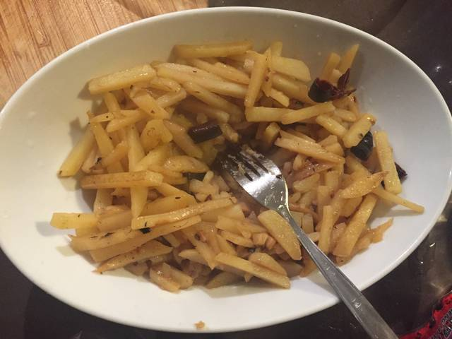

烟台炖土豆丝
材料,
- 土豆3-4个切粗丝切(0.5厘米)浸入冷水
- 蒜2-3瓣切片
- 葱1根切葱花(可选)
- 干辣椒1-2根切碎(可选)
- 八角1枚洗净(可选)
作法,
- 少量油,加入除八角外的所有小料小火炒至蒜瓣略焦黄 (两三个蒜瓣对应四个土豆)
- 放入土豆丝,盐,1小勺酱油(可选),八角(可选), 炒到变软
- 加半碗水(略没过土豆丝底部),几滴醋(可选),盖上锅盖小火焖8-12分钟
- 开盖补适量盐,汤汁略收浓即关火(不要收干,烟台人喜欢留一点"咸鲜汤"拌饭)
常见的 3 个变体,
- 最后2分钟加入青椒丝,颜色更亮,味道更清爽
- 先煸五花肉出油,再炖土豆丝,味道更香
- 部分家庭会放1–2个干辣椒炝锅,香味更突出
